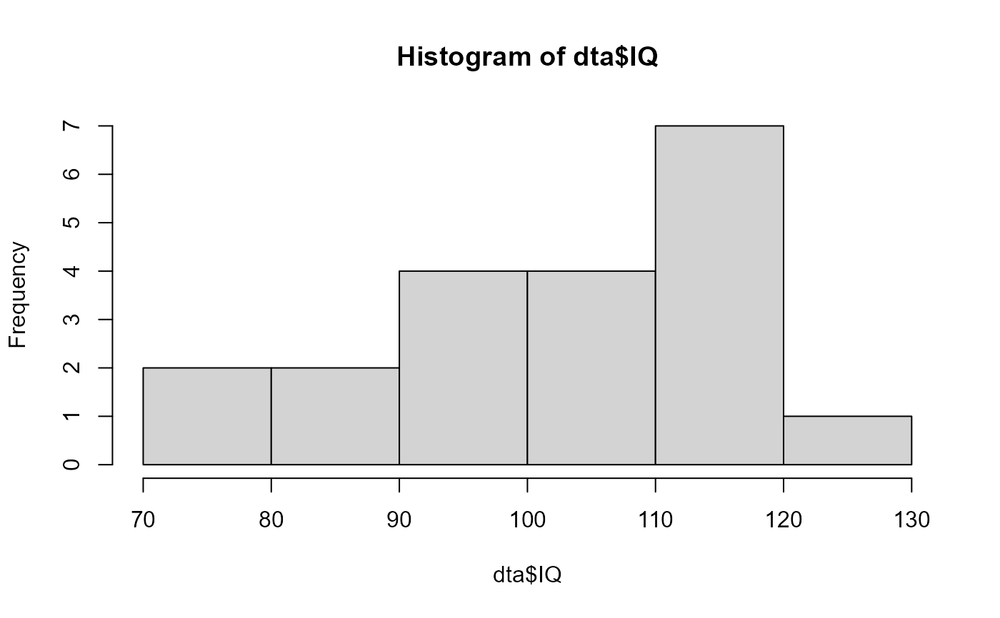
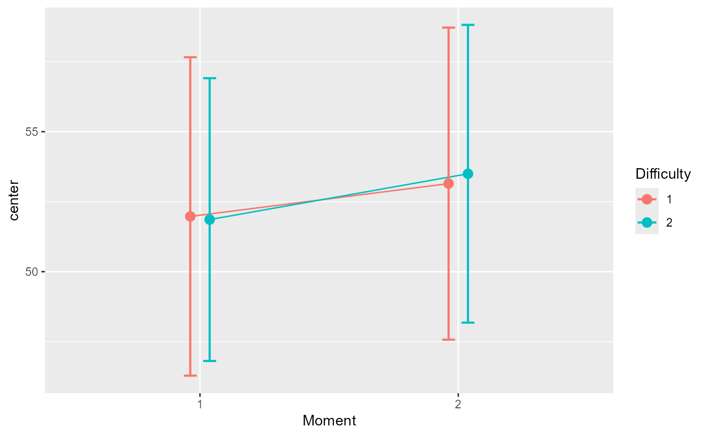

The function GRD() generates a data frame containing
random data suitable for analyses.
The data can be from within-subject or between-group designs.
Within-subject designs are in wide format. The function was originally
presented in Calderini and Harding (2019)
.
GRD( RenameDV = "DV", SubjectsPerGroup = 100, BSFactors = "", WSFactors = "", Effects = list(), Population = list(mean = 0, stddev = 1, rho = 0, scores = "rnorm(1, mean = GM, sd = STDDEV)"), Contaminant = list(mean = 0, stddev = 1, rho = 0, scores = "rnorm(1, mean = CGM, sd = CSTDDEV)", proportion = 0) )
Arguments
| RenameDV | provide a name for the dependent variable (default DV) |
|---|---|
| SubjectsPerGroup | indicates the number of simulated scores per group (default 100 in each group) |
| BSFactors | a string indicating the between-subject factor(s) with, between parenthesis, the number of levels or the list of level names. Multiple factors are separated with a colon ":" or enumerated in a vector of strings. |
| WSFactors | a string indicating the within-subject factor(s) in the same format as the between-subject factors |
| Effects | a list detailing the effects to apply to the data |
| Population | a list providing the population characteristics (default is a normal distribution with a mean of 0 and standard deviation of 1) |
| Contaminant | a list providing the contaminant characteristics and the proportion of contaminant (default 0) |
Value
a data.frame with the simulated scores.
Note
Note that the range effect specification has been renamed
extent to avoid masking the base function base::range.
References
Calderini M, Harding B (2019). “GRD for R: An intuitive tool for generating random data in R.” The Quantitative Methods for Psychology, 15(1), 1--11. doi: 10.20982/tqmp.15.1.p001 .
Examples
# Simplest example using all the default arguments: dta <- GRD() head(dta) #> id DV #> 1 1 -0.9286630 #> 2 2 1.2211696 #> 3 3 -0.4366338 #> 4 4 0.7789042 #> 5 5 0.0532047 #> 6 6 0.4404194 hist(dta$DV)# Renaming the dependant variable and setting the group size: dta <- GRD( RenameDV = "score", SubjectsPerGroup = 1000 ) hist(dta$score )
# Examples for a between-subject design and for a within-subject design: dta <- GRD( BSFactors = '3') dta <- GRD( WSFactors = "Moment (2)") # A complex, 3 x 2 x (2) mixed design with a variable amount of participants in the 6 groups: dta <- GRD(BSFactors = "difficulty(3) : gender (2)", WSFactors="day(2)", SubjectsPerGroup=c(20,24,12,13,28,29) ) # Defining population characteristics : dta <- GRD( RenameDV = "IQ", Population=list( mean=100, # will set GM to 100 stddev=15 # will set STDDEV to 15 ) ) hist(dta$IQ)  # This example adds an effect along the "Difficulty" factor with a slope of 15 dta <- GRD(BSFactors="Difficulty(5)", SubjectsPerGroup = 100, Population=list(mean=50,stddev=5), Effects = list("Difficulty" = slope(15) ) ) # show the mean performance as a function of difficulty: superbPlot(dta, BSFactors = "Difficulty", variables="DV")
# An example in which the moments are correlated dta <- GRD( BSFactors = "Difficulty(2)",WSFactors = "Moment (2)", SubjectsPerGroup = 1000, Effects = list("Difficulty" = slope(3), "Moment" = slope(1) ), Population=list(mean=50,stddev=20,rho=0.85) ) # the mean plot on the raw data... superbPlot(dta, BSFactors = "Difficulty", WSFactors = "Moment(2)", variables=c("DV.1","DV.2"), plotStyle="line", adjustments = list (purpose="difference") )  # ... and the mean plot on the decorrelated data; # because of high correlation, the error bars are markedly different superbPlot(dta, BSFactors = "Difficulty", WSFactors = "Moment(2)", variables=c("DV.1","DV.2"), plotStyle="line", adjustments = list (purpose="difference", decorrelation = "CM") )